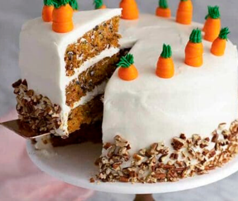
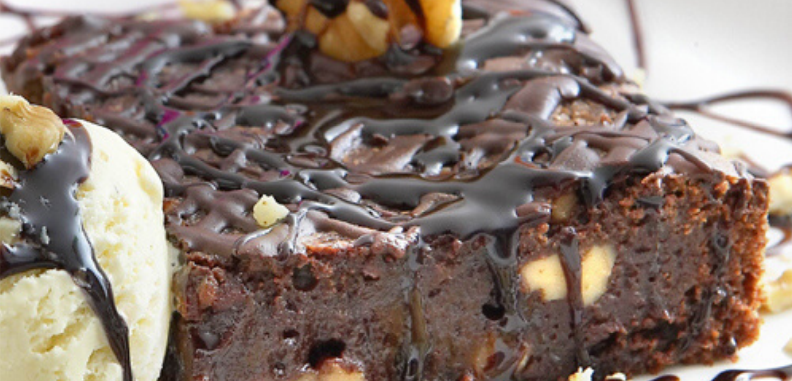

COOKING:
Carrot Cake
Ingredients:

- 350 grams of grated carrot.
- 250 grams of wheat flour.
- 4 eggs.
- 120 grams of normal sugar.
- 150 grams of brown sugar.
- 250 ml of soft olive oil.
- Teaspoon of cinnamon.
- A pinch of salt.
- 2 tablespoons of yeast.
- For coverage.
- 800 grams of philadelphia cheese.
- 140 grams of icing sugar.
Steps:
- The first thing we will do is mix the flour, yeast, salt and spices on the one hand.
- In another bowl, mix the eggs well with the two types of sugar until the sugar dissolves.
- Add the flour mixture little by little until a homogeneous mixture remains.
- Next we add the carrots. Previously we will have peeled and finely grated, we must have 350
grams of grated carrots.
- The oil will be the last, we add it in the form of thread little by little until all the ingredients are
well integrated.
- We grease an oven mold about 20 cm in diameter. We incorporate the mixture and bake it at
180º for about 45 minutes. To know if it is ready, click with a toothpick and when it comes out dry,
it will be ready
- We remove and let cool while we make the coverage.
- In a bowl, mix the cream cheese atroom temperature with the icing sugar until everything is
integrated.
- When the cake is cold, we break it in half as you see in the image and fill with the coverage. We
can really make 3 or 4 layers but I did not want to make two biscuits so that it came out high,so it
seemed to me that it was fine and I assure you that it will take less and it will be just as delicious.
- Cover the cake with all the cheese topping and put it in the fridge to cool down.
BROWNIE:
Ingredients:

- 1/2 cup + 2 tablespoons of salted butter melted.
- 1 cup granulated sugar.
- 2 large eggs.
- 2 teaspoons vanilla extract.
- 1/2 cup melted milk chocolate chips.
- 3/4 cup all-purpose flour.
- 1/4 cup unsweetened cocoa powder.
- 1/2 teaspoon salt.
- 1 cup milk chocolate chips.
Steps:
- Preheat oven to 350 degrees F. Line a metal 9x9 pan with parchment paper.
- Pour melted butter into a large mixing bowl. Whisk in sugar by hand untilsmooth, 30
seconds.
- Add in eggs and vanilla extract. Whisk 1 minute.
- Whisk in melted chocolate until combined and smooth.
- Use a rubber spatula to stirin flour, cocoa powder, and salt until just combined. Stirin
whole chocolate chips.
- Pour into prepared pan and smooth out.
- Bake in the preheated oven for 30 minutes. Let cool in pan 30 minutes before slicing.